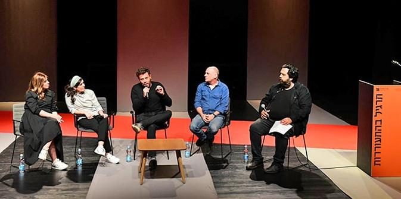
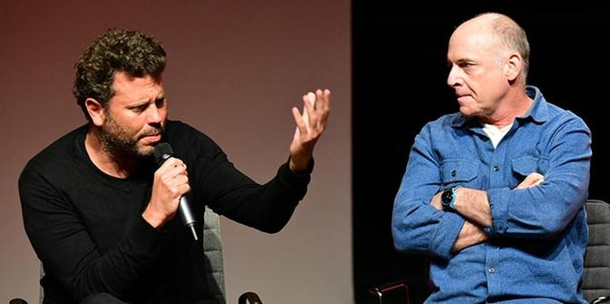
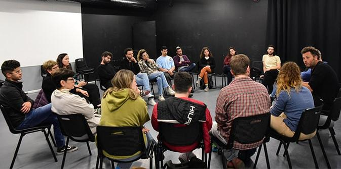
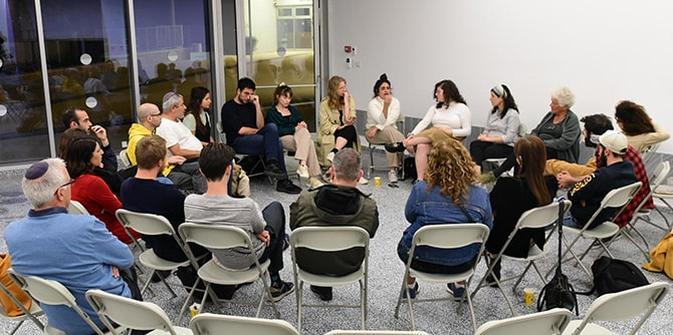

צילום: יוני קלברמן
כיצד מגיב עולם התרבות והאמנות למאבק החברתי בישראל 2023? מה מקומם של מוסדות החינוך ליצירה ולאמנות בתקופה של הפגנות ומאבק פוליטי? מה תפקידם של סוכנות וסוכני תרבות ברגע עמוק של שבר חברתי? השאלות הגדולות הללו מעסיקות מאד את עולם התרבות הישראלית, על גווניו השונים. בארוע שקיימה תוכנית מנדל למנהיגות בתרבות יהודית יחד עם סטודיו למשחק ניסן נתיב ירושלים שבקמפוס האמנויות החדש בעיר, עמדו השאלות הללו במרכז הבמה.
"הסטודנטים שלנו צופים בהתכה החברתית המתרחשת בישראל ושואלים את עצמם מה התפקיד של אנשי יצירה ותרבות ברגע הזה", פתח אהרן פוירשטיין, מנהל סטודיו למשחק ניסן נתיב בירושלים, את האירוע. "יותר משאני מפחד מכל אחת מהתחזיות הפוליטיות הנוראיות והמפחידות, אני מפחד שביום שאחרי, כל מה שיישארו לנו הן ססמאות. אני חושש שביום שאחרי, נגלה שלא נותרה לנו שפה. שאת כלי התרבות שלנו רידדנו למקלות. המצב חמור ומורכב – ויש בארץ שסעים מפחידים, ומורכבויות מרתקות. ובשניהם אי-אפשר באמת לטפל בעזרת ססמאות שנכתבו על-ידי קופירייטר, במקרה הטוב. בעיניי, אמנות ותרבות הן אלו שיכולות לומר משהו, להציע משהו. אנו מבקשים לקיים ערב של שיח מורכב, אחראי ומגוון בעקבות האירועים הפוליטיים והחברתיים בישראל. אירוע שיאתגר את הסטודנטים שלנו אבל גם ייתן להם מרחב בטוח לשמוע ולהשמיע מגוון דעות. מתוך כך פנינו למכון מנדל למנהיגות שיהיו שותפים לאירוע, כמרחב של שיח ערכי מעמיק ומחויב".
"מטרת הערב לברר מה התפקיד שלנו – מובילי תרבות ויצירה, יוצרים מנוסים לצד סטודנטים לאמנות – ברגעי מאבק חברתי, ולאפשר שיחה אחרת מהמתרחש בשיח הציבורי – כזו שיש בה ניואנסים, קשב והקשר רחב, ואיננה נוטה מיד למאבק", אמר מישאל ציון, חבר סגל תוכנית מנדל למנהיגות בתרבות יהודית, ומי שמוביל את הפעולות בשדה התרבות מטעם מכון מנדל למנהיגות.

צילום: יוני קלברמן
מרכז האירוע היה פאנל של בוגרי תוכנית מנדל למנהיגות בתרבות יהודית, ולאחר מכן מעגלי שיח בהשתתפות סטודנטים לאמנות, חברי סגל בסטודיו וחברי הפאנל. את המפגש הנחה היוצר והעיתונאי רוני קובן והשתתפו בו המוזיקאי והסופר אריאל הורוביץ, המתרגם והבמאי אלי ביז׳אווי, הקומיקאית הניה שוחט והעיתונאית חן ארצי סרור, מנהלת תוכנית מנדל למנהיגות בתרבות יהודית. יחד הם סיפרו, התווכחו ושיתפו בכאבים, בפחדים ובתקוות להמשך. ״כל משתתפי הפאנל הם מובילי תרבות שהם 'יותר מאחד' בדעותיהם, זהויותיהם ונאמנויותיהם", תיאר מישאל ציון את חברי הפאנל, "יוצרים פורצי דרך שאינם חוששים לבטא קול ערכי אבל לא מוותרים על הרוחב והעומק של החברה הישראלית".
לשאלתו של המנחה רוני קובן "מה התפקיד של סוכני תרבות ברגע הזה?" הציעו חברי הפאנל תשובות שונות. "אל מול השיח הבינארי, התפקיד שלנו הוא כל הזמן לערבב את החפיסה", אמר אריאל הורוביץ, "להראות חיבורים במקום של פירודים, ומצד שני לשמור על האינטגריטי של השפה. במרחב שמתמלא בשקר – להיות דוברי אמת, להזכיר לאנשים שיש משמעות ומשקל למילים".
אלי ביז׳אווי דיבר על כוחם של תיאטרון ויצירה לספר סיפור ממקום אחר. "פתאום כשרואים את האירועים על במה, או כשהרגשות מתפרצים מסצנה שמגיעה מתרבות אחרת – אנחנו יכולים להבין מחדש את שטף האירועים שמתרחש אצלנו. בשביל זה צריך להכיר את העושר התרבותי העולמי ולהביא את מה שיהיה הכי משמעותי למציאות הישראלית – אבל מפרספקטיבה אחרת", אמר. הניה שוחט, יוצרת המגיעה מהעולם החרדי, הדגישה כמה חשוב גם להיזהר לא לפגוע, דווקא בימים הללו, ולתחזק את הקשרים האישיים והיומיומיים בין שונים.
חן ארצי סרור דיברה על יכולתם של סוכני תרבות להסתכל מתחת לפני השטח ולהנכיח את הפצעים והמורכבויות הלא מדוברות שמניעות את מה שמתרחש ברחובות. "חייבים לדבר על זכויות, אבל חייבים לדבר גם על שייכות – אנשים רוצים להיות שייכים, רוצים הכרה בערך של משפחה, מולדת ואדמה. כשננכיח את השיחה גם מהמקום הזה, נוכל להגיע למרחב פורה יותר".
לפני הפאנל העלו שחקני סטודיו למשחק ניסן נתיב ירושלים, אשר אירח את האירוע, קטעי משחק קצרים בנושא המאבק החברתי, על חרדה ועל לחץ חברתי, בהומור ובמורכבות שהעשירו את הערב והדגימו את היכולת של אמנות להעמיק את השיח החברתי.

צילום: יונתן קלוברמן
לאחר הפאנל התקיימו מעגלי שיח בהשתתפות חברי הפאנל ותלמידי בתי הספר לאמנויות, והנוכחים קיימו שיח כן, פתוח ומעורר. קהל הסטודנטים ומובילי המוסדות הודו לקרן מנדל, למכון מנדל למנהיגות ולתוכנית מנדל למנהיגות בתרבות יהודית על היכולת ליצור שיח מורכב ומשמעותי על אתגרי השעה. "אני כל כך שמחה שגיליתי שזה אפשרי", כתבה אחת הסטודנטיות בתום האירוע, "אפשר לחשוב אחרת ולדבר אחרת. אפשר לגלות הבנה. אפשר לרצות להבין... אני יכולה לא להסכים איתך אבל לרצות שהמיקרופון יגיע אליך. בא לי לשמוע מה תחשוב. לאחר הפאנל גם המפגשים בכיתות עוררו בי תקווה... דווקא הפאנל שנורא חששתי מפניו העצים מבחינתי את המשמעות של תיאטרון, יצירה ואומנות. באופן כללי וביחוד בארץ שלנו, שלי".
סטודנט אחר שיתף: "עלו בי המון מחשבות חדשות במהלך הערב ולאחר מכן. האנשים היו מגוונים והרגשתי שאני מקבל תמונה ברורה של ההסתכלויות השונות על המצב. דרך הדעות העמוקות של הדוברים חוויתי חיזוק גם לדעותיי אבל גם שיקוף, שאותו הייתי צריך, של הכעס או של העיוורון שלי".
 צילום: יונתן קלוברמן
{kind=link}
{kind=link}
{kind=link}
{kind=link}